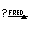
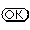

We will now illustrate the functionality of the Dialog Editor by defining a simple prompt dialog that asks for a name and has an ok and cancel button to confirm or cancel the operation. The result is shown in figure 33
| Figure 33 : Ask-name dialog generated by the Dialog Editor |
First, start the manual tools using manpce/0 or user_help/0. Then, start the dialog editor using the option Tools/Dialog Editor. The main window of the dialog editor is now opened on the screen. Use the option File/New Dialog and enter the name `ask_name'. This will add ask_name to the Dialog Windows browser and open an window with the title `Ask Name'. See figure 34. This window is called the `target window'.
| Figure 34 : The Dialog Editor with the ask-name target |
Next, the controls are dragged to the dialog window. The control marked  specifies a text-entry-field. Drag this icon using the left-mouse button to the target dialog. If the mouse is above the target dialog, a dotted box will indicate the outline of the new item when it is dropped. Drop it in about the right location. Now drag two instances of  to the target dialog and place them again at about the right location. Items can be moved by dragging them with the left button. They can also be copied to other target dialog windows by dragging them there and they can be deleted by dragging them to the window holding the prototypes.
Now, double-click, using the left button, the text-entry field. A
dialog with attributes will appear. The caret is positioned at the Name
field. Clear the name field (Control-U is the fastest way) and enter name,
followed by RETURN. The system will automatically fill the Label
field with Name (capitalising the name of the control). If the
label should be anything else than the capitalised name, type the
correct label now. The other fields are self-explanatory, except for the Type
field. This specifies the type of object edited by the text-entry field.
See `text_item<->type'
for details. Pressing Help creates a window containing the online
manual cards of all displayed attributes.
Double click on both buttons to fix the name/label. Assign the ok button to be the default button. The result is shown in figure 35.
| Figure 35 : The Dialog Editor after specifying attributes |
Next, the Mode menu of the main Dialog Editor window is used to select Layout Mode. The button Layout guesses the symbolic layout description of the dialog and places the items. If you are not satisfied with the result, press Undo. Next, you can help the layout mechanism by positioning the items closer to the intended position and try again, or place the items by hand. In the latter case, the generated code will express the layout using pixel-locations rather then a symbolic description and the result may look bad if the end-user runs XPCE with a different look-and-feel. The Fit button adjusts the size of the dialog window to its content.
The next step is to specify the behaviour of the dialog window. Select the Action mode and press the Behaviour Model button to open the behaviour window. Now drag all items from the target dialog window to the behaviour window.
Each control is now represented by a behavioural component. Each such component defines a number of ports. The Dialog Editor distinguishes between three types of ports:
The window (background) represents the target dialog as a whole. Ports may be added to both behavioural components and the background window using the popup menu associated with the right mouse-button.
While hovering over the various parts of the behavioural model, the feedback window at the bottom describes the meaning of the current item. The popup menus defined on all components of the model provide context-sensitive access to the XPCE online manual as well as the online documentation of the Dialog Editor.
In general, the action(s) associated with a control are specified by connecting its event-ports to a send-port in the diagram. The line connecting both ports has a fat dot in the middle. Get-ports may be linked to this fat dot to specify arguments for the send-operation. If a get-method needs to be performed on the value of a get-port to define the argument, Extend the get-port, define a new get-port on the extension and link the result to the argument dot.
For our Ask Name dialog, we need to make a modal
dialog, see
section 4.4. Such a dialog returns
by invoking the ->return method on the dialog
window. The popup of the background is used to define a send-port named return,
representing ->return to the dialog. Position the
pointer above the new item to validate your action.
Now, as both methods will make the dialog return immediately, link
the
message event-port of both buttons to this return
send-port. Link the selection get-port of the text field to the
argument dot of the link from the Ok button. This specifies that
the dialog will return with the `text_item<-selection'
if the Ok button is pressed. Add the constant @nil
to the background using the popup menu on the background. This finishes
the specification of our dialog window. The resulting behaviour model is
shown in figure 36.
| Figure 36 : Behaviour model of Ask Name |
To generate source code, start PceEmacs using the Edit command from the background menu. This will open PceEmacs on the file ask_name.pl. Any other PceEmacs window editing a Prolog source file will do as well. Drag the ask_name entry from the main window of the Dialog Editor to the PceEmacs window. The window will indicate it is ready to accept the Prolog source code. Now `drop' the code. The source code will be inserted at the caret location. See figure 37.
| Figure 37 : Creating source-code |
The generated source is a description of the dialog window. This description requires an interpreter to create the dialog window and use it in an application. This interpreter is implemented by make_dialog/2:
The wrapper program to make the dialog-description useful from an
application is given below. First make_dialog/2
is used to create the dialog. Next the dialog is opened in the center of
the display and the system waits for the `frame->return'
message to be send.
ask_name(Name) :-
make_dialog(D, ask_name),
get(D, confirm_centered, RawName),
send(D, destroy),
Name = RawName.
We have now completed the first guided tour through the Dialog Editor, introducing the main concepts and the process of creating a dialog window using this tool. After creating a target dialog window, controls are added to the dialog using drag-and-drop. Their attributes are edited by double-clicking the new controls and filling the subsequently shown dialog window. Next, the items are dragged roughly to the right location, the editor is placed in layout mode and the layout button is used to let the Dialog Editor guess the symbolic layout description. Next the behaviour is defined using the behaviour model editor. Event-ports (control-attributes defining the callback of a control) are linked to send-ports (send-method ports) and arguments are linked to this activation relation. Finally the dialog window is dropped in a PceEmacs window running in Prolog mode (the default when editing a file with extension .pl or .pro). Finally, a small wrapper must be defined that creates the dialog window from the description using make_dialog/2 and opens the dialog in the proper way.